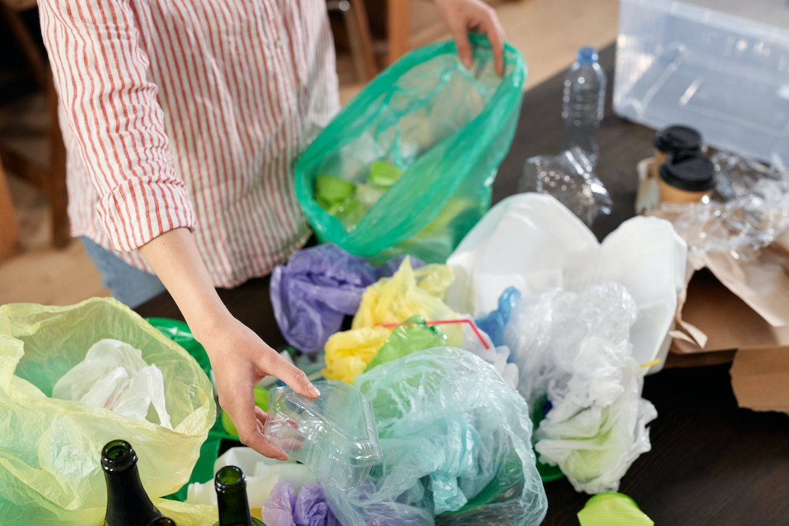
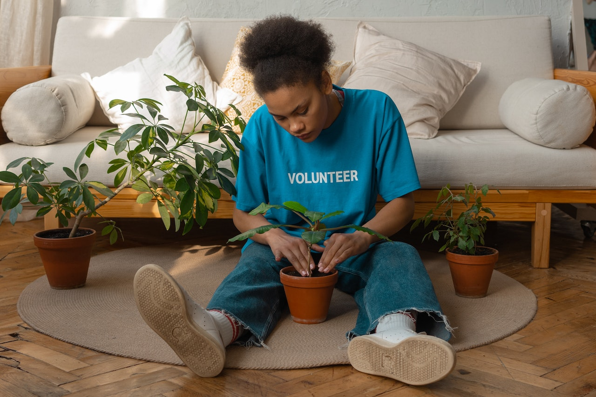

Reciclaje
Reciclar plásticos es importante para reducir la contaminación. A continuación, encuentra más información:
 Leer másConservación de la Energía
Aprende a conservar energía en tu hogar y reducir tu huella de carbono. Descubre cómo:
Leer másReforestación
Ayuda a plantar árboles y restaurar los ecosistemas. Conoce más sobre la reforestación:
 Leer más